Service Request
모든 서비스 요청을 기록 후 절차에 따라 서비스 요청을 신속하게 조치할 수 있습니다..
업무 요청 관리
Service Request Service를 통한 업무 요청 관리 방법을 설명합니다.
1. 요청 업무 관리
Service Request - Configuration - Request Type
요청할 수 있는 업무의 담당자와 설명을 사전에 지정할 수 있습니다.
-
[Create Type] 버튼을 클릭합니다. 또는 [Modify Type] 버튼을 클릭해 기존 업무 요청을 편집할 수 있습니다.
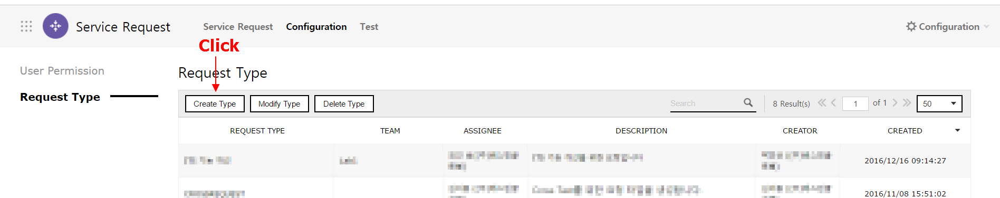
-
"Create Request Type" 화면에서 새롭게 추가할 업무 요청의 정보를 입력합니다.
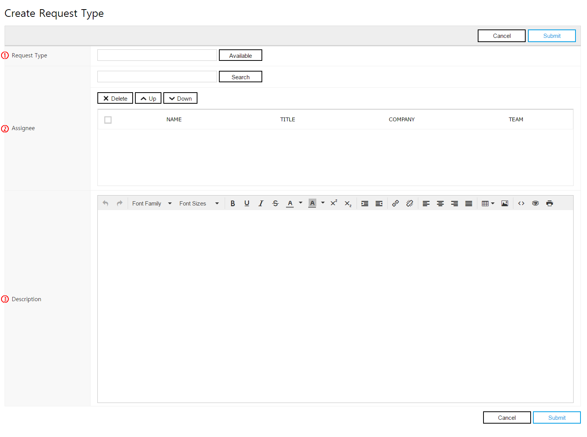
No Name Required Description ① Request Type Required 새롭게 생성할 업무 요청의 이름을 입력합니다. ② Assignee Required 새롭게 생성할 업무 요청의 기본 담당자를 지정할 수 있습니다.
복수의 담당자를 지정할 수 있습니다.
Assignee 목록의 가장 위에 있는 사용자가 기본 담당자로 설정됩니다.③ Description . 업무 요청의 설명을 입력합니다. -
[Submit] 버튼을 클릭해 입력한 내용을 저장합니다. Request Type 목록에서 작성한 새 업무 요청이 추가되었음을 확인할 수 있습니다.
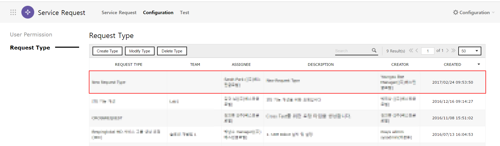
2. 업무 요청하기
Service Request - All Request, My Requests
다른 사용자에게 업무를 요청할 수 있습니다.
-
"All Request"화면에서 [Create New] 버튼을 클릭합니다.

-
"New Service Request"화면에서 요청할 업무의 상세 내용을 입력합니다.
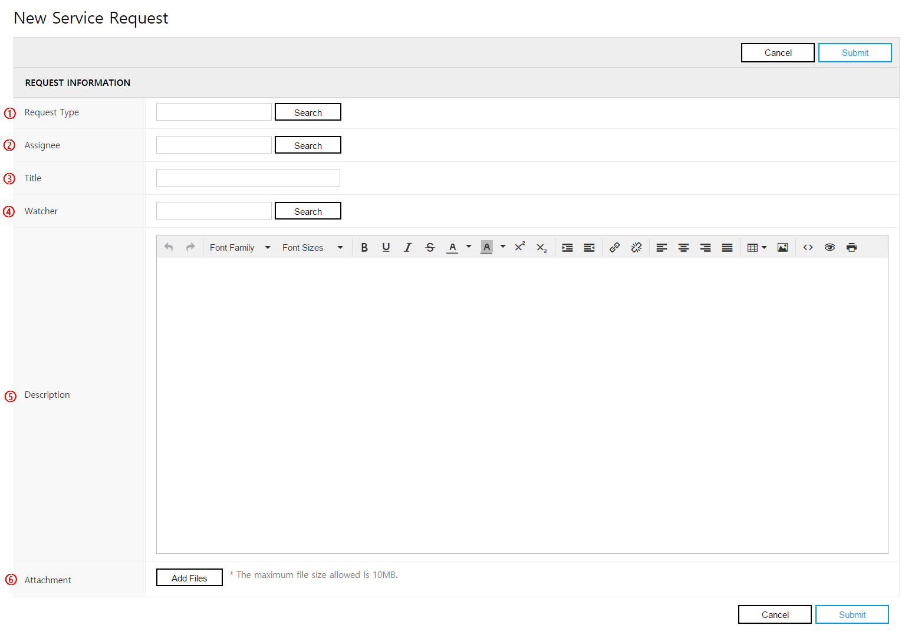
No Name Required Description ① Request Type Required 요청할 업무의 Type을 선택할 수 있습니다.
[Search] 버튼 클릭 시 요청 가능한 업무의 목록이 표시되며, 요청할 업무를 선택할 수 있습니다.② Assignee Required 업무를 요청할 사용자를 선택할 수 있습니다.
기본값으로 Request Type에 지정된 사용자가 지정됩니다.
[Search] 버튼을 클릭해 요청할 사용자를 변경할 수 있습니다.③ Title Required 요청할 업무의 제목을 입력할 수 있습니다. ④ Watcher . 요청한 업무의 참조자를 선택할 수 있습니다.
[Search] 버튼을 클릭해 복수의 사용자를 참조자로 등록할 수 있습니다.
참조자로 지정된 사용자들은 업무 요청의 변경 시 이메일로 알림을 받을 수 있습니다.⑤ Description . 업무 요청의 설명을 입력합니다. ⑥ Attachment . 업무 요청과 연관이 있는 파일을 업로드할 수 있습니다.
복수의 파일을 업로드할 수 있습니다. -
[Submit] 버튼을 클릭해 업무 요청을 진행합니다. "My Requests" 화면에서 로그인한 사용자가 요청한 업무 목록이 표시됩니다. 요청한 업무의 담당자에게 새로운 업무 요청이 발생했음을 알리는 이메일이 발송됩니다.
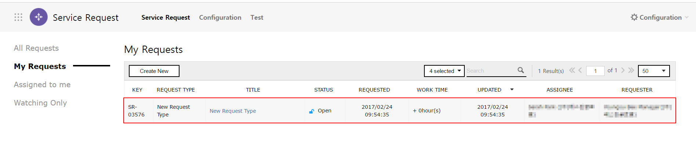
3. 나에게 요청한 업무 보기
3.1 내가 담당자인 업무 요청
Service Request - Assign to me
다른 사용자가 로그인한 사용자에게 요청한 업무 목록을 확인하고, 요청한 업무를 처리합니다.
-
"Assign to me" 화면에서 로그인한 사용자에게 도착한 업무 요청의 목록을 확인합니다. 요청받은 업무를 클릭해 요청한 업무의 상세 정보를 확인할 수 있습니다.
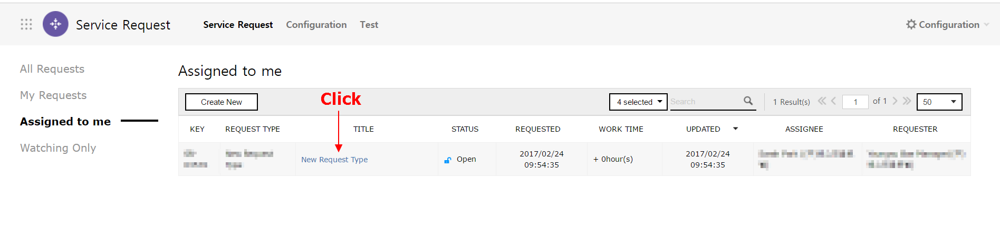
-
요청 받은 업무의 상세 내역을 확인하고, 업무 요청을 처리합니다.

3.2 내가 참조자인 업무 요청
Service Request - Watching Only
참조자로 지정된 업무 요청의 내용을 확인할 수 있습니다.
-
"Watching Only" 화면에서 로그인한 사용자가 참조자로 지정된 업무 요청을 확인할 수 있습니다. 참조자로 지정된 요청을 클릭해 업무 요청의 상세 정보를 확인할 수 있습니다.

-
참조자로 지정된 업무 요청의 상세 내용을 확인할 수 있습니다.
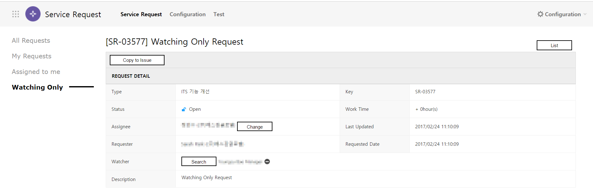
3.3 업무의 처리 상태 기록
업무의 처리 상태를 기록할 수 있습니다. 처리 상태가 변경될 경우 요청자, 참조자에게 업무 요청의 상태가 변경되었음을 이메일로 전달합니다.
-
[Action] 버튼을 클릭해 요청받은 업무의 처리 상태를 변경합니다.
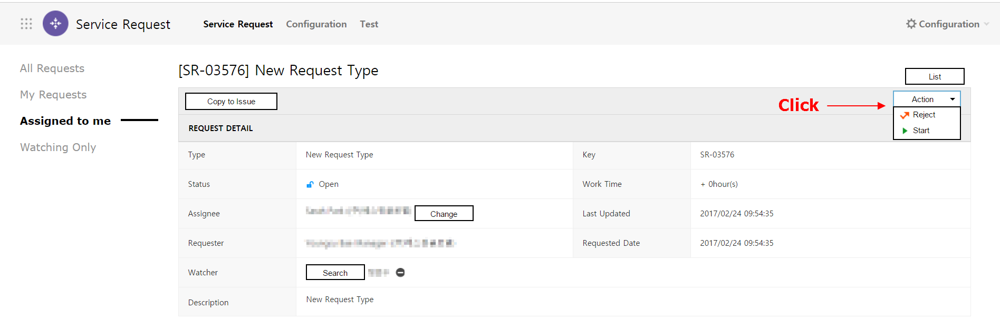
Status Description Open 업무 요청이 작성되었으나 아직 업무에 착수하지 않은 상태를 의미합니다. In-progress 담당자가 요청받은 업무를 처리 중인 상태를 의미합니다. Resolve 담당자가 요청받은 업무의 처리를 완료한 상태를 의미합니다. Reject 담당자가 요청받은 업무의 처리를 반려한 상태를 의미합니다. -
"Status" 항목에서 업무의 상태가 변경되었음을 확인할 수 있습니다.
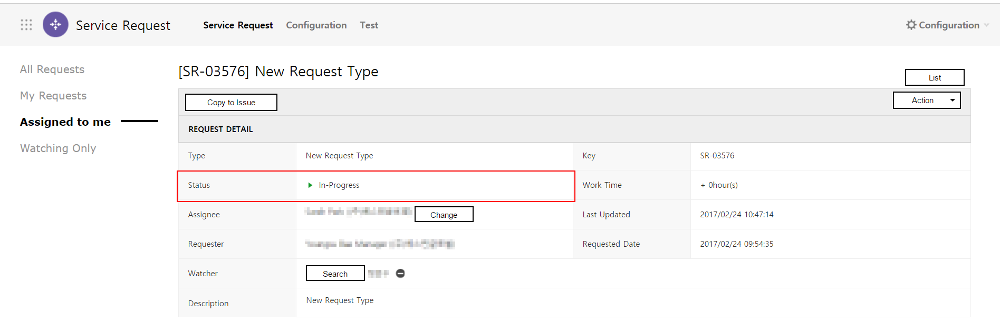
3.4 요청받은 업무를 업무 이력으로 기록
요청받은 업무의 프로젝트/팀의 업무 이력으로 남기기 위해 Project Service로 복사할 수 있습니다.
-
[Copy to Issue] 버튼을 클릭합니다.

-
Project Service의 "Create Issue" 화면으로 요청받은 업무의 내용이 복사됩니다. 이 업무를 등록할 프로젝트/팀을 선택해 업무로 등록할 수 있습니다.

4. 업무 요청 이력 검색
조건을 설정하고 키워드를 입력해 찾고자하는 업무 요청을 검색하고, 그 내용을 확인할 수 있습니다.
4.1 조건을 설정해 검색
Service Request
-
검색할 조건을 선택합니다. [Status] 버튼을 클릭하면 드롭다운 메뉴로 선택 가능한 조건이 표시됩니다.
-
'Status' 조건 선택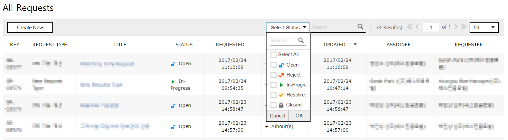
-
-
드롭다운 메뉴의 [OK] 버튼을 클릭합니다.

-
선택한 조건의 검색 결과를 업무 요청 목록에서 확인할 수 있습니다.
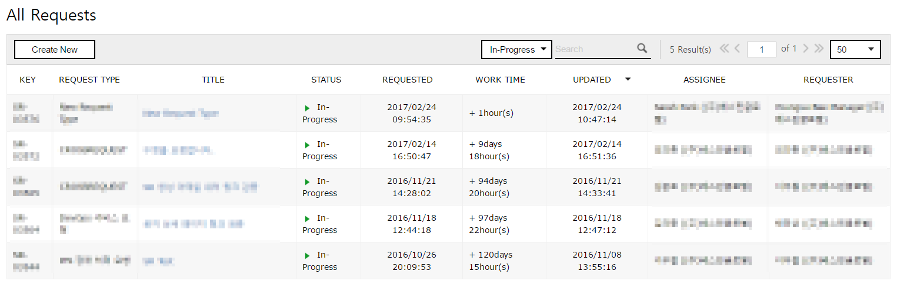
4.2 키워드를 입력해 검색
Service Request
-
검색창에 검색할 키워드를 입력 후, [Enter]키 혹은 [검색] 버튼을 클릭합니다.
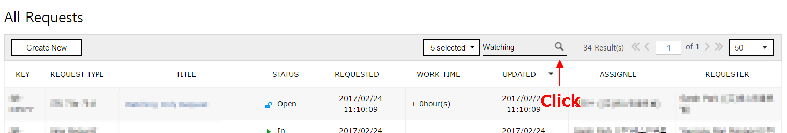
-
목록에 입력한 키워드와 일치하는 제목을 가진 결과가 표시됩니다. 입력한 키워드와 일치하는 텍스트가 하이라이팅되어 표시됩니다.